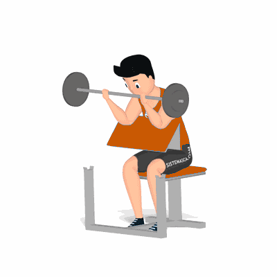

Rosca Scott

Um dos exercícios mais clássicos da musculação, consegue recrutar isoladamente as fibras que se propõe. Basicamente, por ser um exercício mono articular, a rosca scott imprime maior intensidade nos músculos dos bíceps.
Ficha Técnica
Tipo: Musculação
Grupo Muscular: Bíceps
Aparelho: Nenhum
Músculos: Nenhum
Como realizar
- Sente no banco Scott;
- Braços estendidos e repousados sobre o apoio, realize a pegada supinada na barra, as mãos devem estar alinhadas com os ombros;
- Com o dorso das mãos voltado para baixo, flexione os cotovelos movendo a barra em direção aos ombros realizando a concentração máxima dos músculos;
- Baixe o peso até a posição inicial até o ponto em que os braços fiquem semi-estendidos;
- Flexione novamente, repetindo os movimentos.
 RC STORE
RC STORE